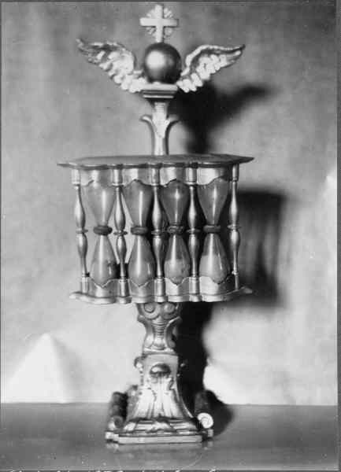

Per Johansson.

Född 8 jan 1769 i Sten, Loftahammar (H) 4 .
Död 10 nov 1850 i Bredvassa, Loftahammar (H) 5 .
|
Född
22 sep 1773
i Långrådna, Östra Ed (E)
1
.
Död 12 jan 1836 i Bredvassa, Loftahammar (H) 2 . |
|
Karin Svensdotter
Född 22 sep 1773 i Långrådna, Östra Ed (E) 1 . Död 12 jan 1836 i Bredvassa, Loftahammar (H) 2 . |
|||

Det timglas som Per och Karin skänkte till Loftahammars kyrka 1832
|
Gift
31 jan 1796
i Loftahammar (H)
3
.
Per Johansson.
Född 8 jan 1769 i Sten, Loftahammar (H) 4 . Död 10 nov 1850 i Bredvassa, Loftahammar (H) 5 . |
Framställd 12 aug 2026 med hjälp av Disgen version 2025.